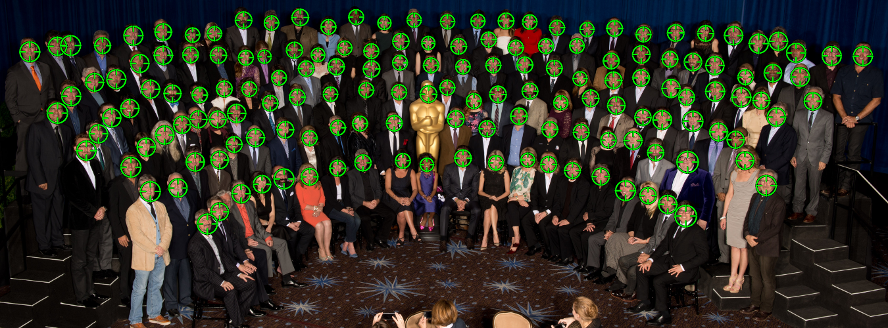
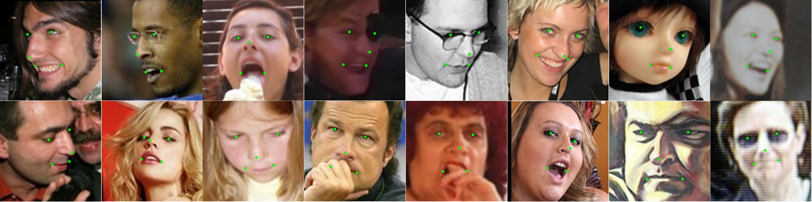

使用 ＣonvNet 做人脸年龄估计技术总结．人脸含有非常重要的个人信息，无论我们随身携带的各种证件，还是电子档案，都有一个非常重要的位置用于放置脸部照片．人脸识别(身份验证，表情，种族，性别，年龄）是人脸研究核心课题，人脸检测, 人脸关键点对准是做好人脸识别的基础．由于人脸识别广阔的应用前景，国内关于人脸识别的公司陆续上市，例如 LinkFace ， Face++．本文主要总结最近的一个工作（年龄估计）．
人脸检测(Face detection)
脸部含有人类年龄最重要的信息，因此做年龄估计的第一步就是如何准确的从一张含有人脸的图像中 Crop 出一张脸．这在 CV 称作人脸检测，是一个古老的话题．伴随深度学习等技术的迅速发展，人脸检测的准确度有了很大提高．很多相关的成果在最近几年的顶级会议或者期刊发表．其中［DPM,ECCV2014］（http://markusmathias.bitbucket.org/2014_eccv_face_detection/） 是一个非常成功的方法．

关键点检测(Key points) 与人脸矫正(Face alignment)
在一张人脸图像上，关键点主要是以下５个位置：一双眼睛，鼻尖，嘴巴的两角．如果能够准确的预测这５个位置，那么对于人脸识别的相关任务意义不言而喻．但是在实际应用中人脸图像由于受到姿态，表情，灯光，遮挡等复杂因素的影响，对于解决这个问题带来严重的挑战．为了解决这个问题，各种模型以及算法被提出． 香港中文大学 Prof. Xiaoou Tang (http://www.ie.cuhk.edu.hk/people/xotang.shtml) 带领的Multimedia Laboratory (http://mmlab.ie.cuhk.edu.hk/) 在解决这个问题取得重大成功，他们的方法是使用深度卷积网络，这个工作（http://mmlab.ie.cuhk.edu.hk/archive/CNN_FacePoint.htm）发表在 CVPR 2013. 只要提取到关键点，对齐将是一件比较容易的事情，常用的方法比如模板匹配．

训练CNN(Training CNN)
我们的最终目的是要根据人脸面部的表征预测年龄．有了前面的准备工作，可能很多人回想，只要把这些数据塞到一个深度卷积网络（ＣonvNet）训练不就好了吗？遗憾的是要成功的训练一个 ＣonvNet 并非易事．因为 ＣonvNet 能够取得成功一个重要因素就是大量的训练样本．但是目前公开的相关的年龄的数据集训练样本相当有限，例如 Morph 作为最大的数据集也仅仅只有５万多张．因此训练样本成为使用 ＣonvNet 模型估计年龄的瓶颈．我们的工作正是为了解决这一问题．
……
估计年龄(Age estimation)
这里提供一个演示．使用我们的方法在一些测试数据年龄的预测结果．